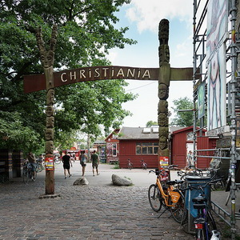
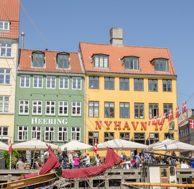
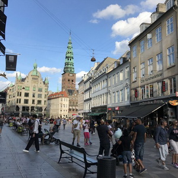
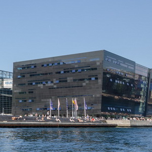
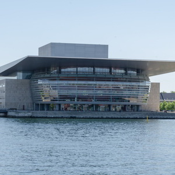
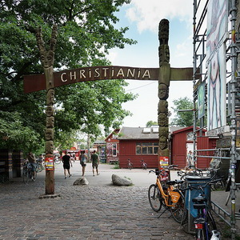
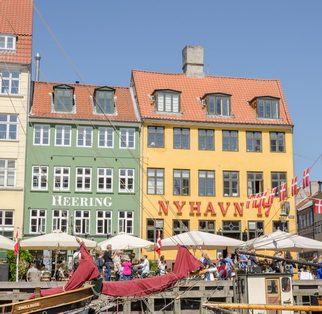
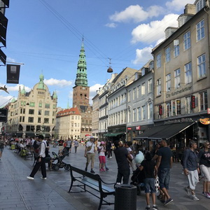
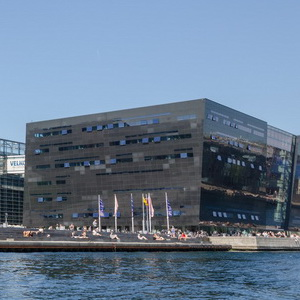
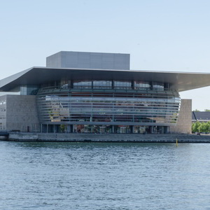

Интересные факты
 









Русалочка
Русалочка — один из символов сегодняшнего Копенгагена. Эта статуя находится на пристане Лангелиние и посвящена главной героине всем известной сказки Г.Х.Андерсена. Скульптура, созданная Е. Ериксеном, була открыта 23 августа 1913 года и стала подарком датского пивовара Карла Якобсена городу.
Интересно, что прообразом для создания статуи послужила прима балета Дании — Джульетта Прайс. Бизнесмен Якобсен любил ее без памяти. В то время, как позировала скульптору жена. Говорят, в статуе нашли отражение черты обеих женщин.
Христиания
В Дании есть так называемая Вольная община "Христиания"— это целая страна с населением в тысячу человек. Сюда съезжаются все неформалы Земли.
Основали это государство хиппи в 1971-м году. Тут имеются свои законы, флаг и даже казна. Здесь нельзя ездить на транспорте. За порядком следят «зеленые бригады», вместо правительства — общее собрание.
Новая гавань
Новая гавань представляет собой километровый столичный канал, обустроенный в 17 столетии. Вокруг канала постепенно разрастался район, в котором начали проживать путешественники и моряки.
До 1980 года Ньюхавн считался неспокойным, если не сказать одним из самых неблагоприятных районов Копенгагена. Однако благодаря реконструкции, он со временем превратился в известную достопримечательность со своей неповторимой атмосферой.
Улица Строгет
Самая длинная улица Европы находится в Копенгагене и называется она Строгет. Удивителен тот факт,что Строгет не встретить на карте города, лишь в путеводителях. Дело в том, что это не улица в классическом понимании, а целая туристическая зона, которая протянулась с запада на восток и соединила пять перетекающих друг в друга улиц.
Пешеходная зона протяженностью в 2 километра была организована здесь в 1960-е годы и стала самым популярным местом для городских прогулок.
Королевская библиотека
Сегодня это одна из крупнейших библиотек не только в Дании, но и во всём мире — в её фондах хранятся почти все издания на датском языке, начиная с середины 15 века. Это место, где собраны настоящие литературные сокровища, среди которых — Библия Гутенберга, с которой началась история книгопечатания, труды и личные переписки Ганса Христиана Андерсена, работы естествоиспытателя Карла Линнея и многое многое другое.
Основано это заведение в 17 веке королем Фредериком Ш. Библиотека настолько огромна, что имеет множество корпусов, включая самый современный «Чёрный алмаз».
Оперный театр
Оперный театр в Копенгагене на настоящий момент является одним из новейших и самых дорогостоящих театров мира. Открыт 15 января 2005года. Его строительство обошлось более чем в 5000 илн долларов США. Зданиеимеет 14 этажей, общей площадью около 40 тыс. кв.м, а за его современным стеклянным фасадом скрываются роскошные залы с шикарной отделкой.
Площадь перед оперой охватывает 5500 м² и вымощена гранитом. Для отделки здания использовался южногерманский кальцит, сицилийский мрамор, белый клён и 24-каратное листовое золото.